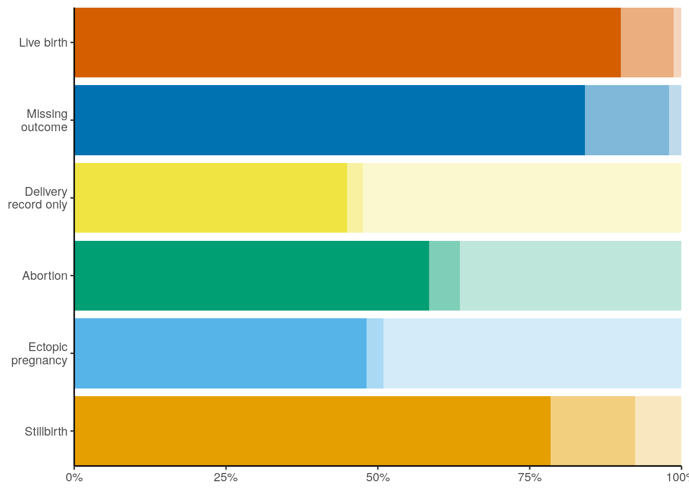

library(allofus)
library(tidyverse)
library(ggokabeito)
library(gtsummary)
theme_set(theme_classic())Look at results of HIPPS algorithm
con <- aou_connect()all <- read_rds(here::here("workbench/merged_episodes_with_metadata_df.rds"))
count(all,
both_algo = inferred_episode_start < inferred_episode_end & HIP_flag == 1 & PPS_flag == 1,
post_2016 = inferred_episode_start >= as.Date("2016-01-01")
)| both_algo | post_2016 | n |
|---|---|---|
| FALSE | FALSE | 16917 |
| FALSE | TRUE | 12559 |
| TRUE | FALSE | 11201 |
| TRUE | TRUE | 18968 |
# restrict
hipps <- all %>%
filter(
inferred_episode_start < inferred_episode_end,
HIP_flag == 1 & PPS_flag == 1,
inferred_episode_start >= as.Date("2016-01-01")
)hipps_w_demo <- read_rds(here::here("workbench/hipps_cleaned.rds")) %>%
filter(
inferred_episode_start < inferred_episode_end,
HIP_flag == 1 & PPS_flag == 1,
inferred_episode_start >= as.Date("2016-01-01")
) %>%
mutate(across(c(state_cat, gender_cat, orientation_cat, race_eth_cat, marital_status_cat), fct_infreq),
across(where(is.factor), fct_drop))nrow(hipps_w_demo)[1] 18968length(unique(hipps_w_demo$person_id))[1] 14237hipps_w_demo %>%
janitor::tabyl(outcome_category)| outcome_category | n | percent |
|---|---|---|
| Live birth | 11385 | 0.6002214 |
| Missing outcome | 5043 | 0.2658688 |
| Delivery record only | 951 | 0.0501371 |
| Abortion | 1298 | 0.0684310 |
| Ectopic pregnancy | 212 | 0.0111767 |
| Stillbirth | 79 | 0.0041649 |
hipps_w_demo %>%
janitor::tabyl(outcome_category) %>%
mutate(outcome_category = fct_rev(outcome_category)) %>%
ggplot(aes(outcome_category, percent)) +
geom_col(aes(fill = outcome_category)) +
geom_text(aes(label = scales::number(n, big.mark = ",")),
hjust = -.25
) +
scale_fill_okabe_ito() +
scale_y_continuous(labels = scales::percent) +
scale_x_discrete(labels = ~ str_wrap(.x, 13)) +
coord_flip(expand = FALSE, ylim = c(0, 1.03)) +
theme(
legend.position = "none",
axis.title = element_blank()
)hipps_w_demo %>%
mutate(outcome_concordance_score = fct_rev(factor(outcome_concordance_score))) %>%
janitor::tabyl(outcome_category, outcome_concordance_score) %>%
mutate(across(where(is.numeric), ~ ifelse(.x < 20 & .x > 0, "<20", as.character(.x))))| outcome_category | 2 | 1 | 0 |
|---|---|---|---|
| Live birth | 10247 | 991 | 147 |
| Missing outcome | 4239 | 702 | 102 |
| Delivery record only | 427 | 25 | 499 |
| Abortion | 759 | 65 | 474 |
| Ectopic pregnancy | 102 | <20 | 104 |
| Stillbirth | 62 | <20 | <20 |
janitor::tabyl(hipps_w_demo, outcome_concordance_score)| outcome_concordance_score | n | percent |
|---|---|---|
| 0 | 1332 | 0.0702235 |
| 1 | 1800 | 0.0948967 |
| 2 | 15836 | 0.8348798 |
hipps_w_demo %>%
mutate(outcome_category = fct_rev(outcome_category)) %>%
ggplot() +
geom_bar(aes(outcome_category,
fill = outcome_category,
alpha = factor(outcome_concordance_score)
), position = "fill") +
scale_alpha_manual(values = c(.25, .5, 1)) +
scale_fill_okabe_ito() +
scale_y_continuous(labels = scales::percent) +
scale_x_discrete(labels = ~ str_wrap(.x, 13)) +
coord_flip(expand = FALSE) +
theme(
legend.position = "none",
axis.title = element_blank()
)
hipps_w_demo %>%
janitor::tabyl(precision_category)| precision_category | n | percent |
|---|---|---|
| month | 498 | 0.0262547 |
| non-specific | 729 | 0.0384332 |
| three-month | 528 | 0.0278364 |
| three-week | 1084 | 0.0571489 |
| two-month | 374 | 0.0197174 |
| two-week | 3185 | 0.1679144 |
| week | 10519 | 0.5545656 |
| week_poor-support | 2051 | 0.1081295 |
hipps_w_demo %>%
mutate(
resolution = case_when(
precision_category %in% c("week", "two-week", "three-week") ~ "Week-level",
precision_category %in% c("month", "two-month", "three-month") ~ "Month-level",
precision_category %in% c("week_poor-support") ~ "Week-level (1 concept)", precision_category %in% c("non-specific") ~ "Non-specific"
),
resolution = fct_relevel(resolution, "Week-level", "Week-level (1 concept)", "Month-level", "Non-specific")
) %>%
count(resolution) %>%
mutate(prop = n / sum(n))| resolution | n | prop |
|---|---|---|
| Week-level | 14788 | 0.7796288 |
| Week-level (1 concept) | 2051 | 0.1081295 |
| Month-level | 1400 | 0.0738085 |
| Non-specific | 729 | 0.0384332 |
hipps_w_demo %>%
group_by(outcome_category) %>%
summarise(mean = mean(gestational_age_days_calculated), median = median(gestational_age_days_calculated), min = min(gestational_age_days_calculated), max = max(gestational_age_days_calculated), q1 = quantile(gestational_age_days_calculated, .01), q99 = quantile(gestational_age_days_calculated, .99)) %>%
mutate(across(where(is.numeric), ~ . / 7))| outcome_category | mean | median | min | max | q1 | q99 |
|---|---|---|---|---|---|---|
| Live birth | 38.11573 | 38.571429 | 8.7142857 | 79.57143 | 27.262857 | 42.85714 |
| Missing outcome | 24.25056 | 23.000000 | 3.7142857 | 71.14286 | 8.000000 | 50.39143 |
| Delivery record only | 38.29623 | 39.142857 | 10.8571429 | 77.85714 | 14.285714 | 58.14286 |
| Abortion | 13.04116 | 11.714286 | 0.2857143 | 75.00000 | 7.000000 | 36.29429 |
| Ectopic pregnancy | 11.31536 | 9.928571 | 6.2857143 | 41.28571 | 6.714286 | 37.65714 |
| Stillbirth | 28.72333 | 26.714286 | 17.1428571 | 72.28571 | 18.925714 | 47.99429 |
hipps_cleaned <- hipps_w_demowrite_rds(hipps_cleaned, here::here("workbench/hipps_cleaned_restricted.rds"))
aou_workspace_to_bucket(here::here("workbench/hipps_cleaned_restricted.rds"))Demographics table
demo_table <- hipps_cleaned %>%
distinct(person_id, gender_cat, orientation_cat, race_eth_cat, income_cat, edu_cat, marital_status_cat, state_cat) %>%
tbl_summary(
include = c(gender_cat, orientation_cat, race_eth_cat, income_cat, edu_cat, state_cat),
label = list(
gender_cat ~ "Gender identity",
orientation_cat ~ "Sexual orientation",
race_eth_cat ~ "Race/ethnicity",
income_cat ~ "Family income",
edu_cat ~ "Education",
state_cat ~ "State of residence"
)
) %>%
bold_labels()
demo_table| Characteristic | N = 14,2371 |
|---|---|
| Gender identity | |
| Woman | 14,018 (99%) |
| Other/multiple | 52 (0.4%) |
| Man | 28 (0.2%) |
| Unknown | 139 |
| Sexual orientation | |
| Straight | 12,795 (92%) |
| Bisexual | 833 (6.0%) |
| None | 195 (1.4%) |
| Gay/lesbian | 89 (0.6%) |
| Unknown | 325 |
| Race/ethnicity | |
| Hispanic or Latino | 6,044 (43%) |
| White | 4,702 (34%) |
| Black or African-American | 2,244 (16%) |
| Asian | 465 (3.3%) |
| More than one race | 304 (2.2%) |
| Other | 118 (0.8%) |
| Middle Eastern or North African | 95 (0.7%) |
| Native Hawaiian or Other Pacific Islander | 25 (0.2%) |
| Unknown | 240 |
| Family income | |
| < 10k | 2,054 (21%) |
| 10-25k | 1,460 (15%) |
| 25-50k | 2,105 (21%) |
| 50-100k | 1,905 (19%) |
| > 100k | 2,404 (24%) |
| Unknown | 4,309 |
| Education | |
| Less than high school | 1,566 (11%) |
| High school graduate | 3,832 (27%) |
| Some college | 3,683 (26%) |
| College graduate | 2,651 (19%) |
| Advanced degree | 2,213 (16%) |
| Unknown | 292 |
| State of residence | |
| Arizona | 3,431 (24%) |
| New York | 3,173 (22%) |
| California | 1,655 (12%) |
| Massachusetts | 1,294 (9.1%) |
| Pennsylvania | 1,151 (8.1%) |
| Illinois | 745 (5.2%) |
| Wisconsin | 656 (4.6%) |
| Alabama | 613 (4.3%) |
| Michigan | 584 (4.1%) |
| South Carolina | 193 (1.4%) |
| Texas | 164 (1.2%) |
| Florida | 152 (1.1%) |
| Georgia | 92 (0.6%) |
| Colorado | 79 (0.6%) |
| New Jersey | 74 (0.5%) |
| Other | 35 (0.2%) |
| Mississippi | 31 (0.2%) |
| Connecticut | 34 (0.2%) |
| Tennessee | 23 (0.2%) |
| New Hampshire | 18 (0.1%) |
| Louisiana | 11 (<0.1%) |
| Minnesota | 8 (<0.1%) |
| Rhode Island | 7 (<0.1%) |
| Indiana | 9 (<0.1%) |
| Wyoming | 5 (<0.1%) |
| 1 n (%) | |
Live births
preg_table <- hipps_cleaned %>%
filter(outcome_category == "Live birth") %>%
tbl_summary(
include = c(
mom_age_cat_table, year_end_cat, took_the_survey, gestational_age_weeks,
preterm_status_from_calculation
),
label = list(
mom_age_cat_table ~ "Maternal age",
year_end_cat ~ "Year of delivery",
took_the_survey ~ "All of Us participation relative to pregnancy",
gestational_age_weeks ~ "Gestational age at delivery (weeks)",
preterm_status_from_calculation ~ "Preterm (< 37 weeks)"
),
digits = list(gestational_age_weeks ~ c(1))
) %>%
bold_labels()
preg_table| Characteristic | N = 11,3851 |
|---|---|
| Maternal age | |
| 15-19 years | 386 (3.4%) |
| 20-24 years | 2,199 (19%) |
| 25-29 years | 3,196 (28%) |
| 30-34 years | 3,201 (28%) |
| 35-39 years | 1,905 (17%) |
| 40-44 years | 462 (4.1%) |
| 45 years and over | 36 (0.3%) |
| NA-NA years | 0 (0%) |
| Year of delivery | |
| 2016 | 375 (3.3%) |
| 2017 | 1,430 (13%) |
| 2018 | 1,795 (16%) |
| 2019 | 3,046 (27%) |
| 2020 | 2,060 (18%) |
| 2021 | 1,777 (16%) |
| 2022 | 902 (7.9%) |
| All of Us participation relative to pregnancy | |
| After | 5,766 (51%) |
| Before | 2,324 (20%) |
| During | 3,263 (29%) |
| Unclear | 32 (0.3%) |
| Gestational age at delivery (weeks) | 38.6 (37.1, 39.4) |
| Preterm (< 37 weeks) | 2,330 (20%) |
| 1 n (%); Median (IQR) | |
New combined table
demo_table <- hipps_cleaned %>%
distinct(person_id, gender_cat, orientation_cat, race_eth_cat, income_cat, edu_cat, marital_status_cat, state_cat) %>%
tbl_summary(
include = c(
gender_cat, orientation_cat, race_eth_cat, income_cat, edu_cat,
state_cat
),
label = list(
gender_cat ~ "Gender identity",
orientation_cat ~ "Sexual orientation",
race_eth_cat ~ "Race/ethnicity",
income_cat ~ "Family income",
edu_cat ~ "Education",
state_cat ~ "State of residence"
),
digits = list(everything() ~ c(0, 1))
) %>%
bold_labels()
preg_table <- hipps_cleaned %>%
filter(outcome_category == "Live birth") %>%
mutate(
gender_cat = fct_collapse(gender_cat, "Other/multiple" = c("Other", "Man"))
) %>%
tbl_summary(
include = c(
gender_cat, orientation_cat, race_eth_cat, income_cat, edu_cat,
state_cat,
mom_age_cat_table, year_end_cat, took_the_survey, gestational_age_weeks,
preterm_status_from_calculation
),
label = list(
gender_cat ~ "Gender identity",
orientation_cat ~ "Sexual orientation",
race_eth_cat ~ "Race/ethnicity",
income_cat ~ "Family income",
edu_cat ~ "Education",
state_cat ~ "State of residence",
mom_age_cat_table ~ "Maternal age",
year_end_cat ~ "Year of delivery",
took_the_survey ~ "All of Us participation relative to pregnancy",
gestational_age_weeks ~ "Gestational age at delivery (weeks)",
preterm_status_from_calculation ~ "Preterm (< 37 weeks)"
),
digits = list(everything() ~ c(0, 1))
) %>%
bold_labels()
combo <- gtsummary::tbl_merge(list(demo_table, preg_table), tab_spanner = c("Individuals", "Live births"))
combo| Characteristic | Individuals | Live births |
|---|---|---|
| N = 14,2371 | N = 11,3852 | |
| Gender identity | ||
| Woman | 14,018 (99.4%) | 11,239 (99.5%) |
| Other/multiple | 52 (0.4%) | 53 (0.5%) |
| Man | 28 (0.2%) | |
| Unknown | 139 | 93 |
| Sexual orientation | ||
| Straight | 12,795 (92.0%) | 10,455 (93.6%) |
| Bisexual | 833 (6.0%) | 544 (4.9%) |
| None | 195 (1.4%) | 119 (1.1%) |
| Gay/lesbian | 89 (0.6%) | 49 (0.4%) |
| Unknown | 325 | 218 |
| Race/ethnicity | ||
| Hispanic or Latino | 6,044 (43.2%) | 5,407 (48.2%) |
| White | 4,702 (33.6%) | 3,422 (30.5%) |
| Black or African-American | 2,244 (16.0%) | 1,582 (14.1%) |
| Asian | 465 (3.3%) | 370 (3.3%) |
| More than one race | 304 (2.2%) | 247 (2.2%) |
| Other | 118 (0.8%) | 83 (0.7%) |
| Middle Eastern or North African | 95 (0.7%) | 79 (0.7%) |
| Native Hawaiian or Other Pacific Islander | 25 (0.2%) | 24 (0.2%) |
| Unknown | 240 | 171 |
| Family income | ||
| < 10k | 2,054 (20.7%) | 1,435 (19.1%) |
| 10-25k | 1,460 (14.7%) | 1,106 (14.7%) |
| 25-50k | 2,105 (21.2%) | 1,727 (23.0%) |
| 50-100k | 1,905 (19.2%) | 1,488 (19.8%) |
| > 100k | 2,404 (24.2%) | 1,743 (23.2%) |
| Unknown | 4,309 | 3,886 |
| Education | ||
| Less than high school | 1,566 (11.2%) | 1,258 (11.2%) |
| High school graduate | 3,832 (27.5%) | 3,281 (29.3%) |
| Some college | 3,683 (26.4%) | 2,962 (26.5%) |
| College graduate | 2,651 (19.0%) | 2,040 (18.2%) |
| Advanced degree | 2,213 (15.9%) | 1,644 (14.7%) |
| Unknown | 292 | 200 |
| State of residence | ||
| Arizona | 3,431 (24.1%) | 3,285 (28.9%) |
| New York | 3,173 (22.3%) | 2,877 (25.3%) |
| California | 1,655 (11.6%) | 1,513 (13.3%) |
| Massachusetts | 1,294 (9.1%) | 782 (6.9%) |
| Pennsylvania | 1,151 (8.1%) | 1,032 (9.1%) |
| Illinois | 745 (5.2%) | 521 (4.6%) |
| Wisconsin | 656 (4.6%) | 273 (2.4%) |
| Alabama | 613 (4.3%) | 496 (4.4%) |
| Michigan | 584 (4.1%) | 231 (2.0%) |
| South Carolina | 193 (1.4%) | 2 (0.0%) |
| Texas | 164 (1.2%) | 32 (0.3%) |
| Florida | 152 (1.1%) | 73 (0.6%) |
| Georgia | 92 (0.6%) | 53 (0.5%) |
| Colorado | 79 (0.6%) | 75 (0.7%) |
| New Jersey | 74 (0.5%) | 64 (0.6%) |
| Other | 35 (0.2%) | 28 (0.2%) |
| Mississippi | 31 (0.2%) | 1 (0.0%) |
| Connecticut | 34 (0.2%) | 1 (0.0%) |
| Tennessee | 23 (0.2%) | 0 (0.0%) |
| New Hampshire | 18 (0.1%) | 17 (0.1%) |
| Louisiana | 11 (0.1%) | 6 (0.1%) |
| Minnesota | 8 (0.1%) | 9 (0.1%) |
| Rhode Island | 7 (0.0%) | 6 (0.1%) |
| Indiana | 9 (0.1%) | 7 (0.1%) |
| Wyoming | 5 (0.0%) | 1 (0.0%) |
| Maternal age | ||
| 15-19 years | 386 (3.4%) | |
| 20-24 years | 2,199 (19.3%) | |
| 25-29 years | 3,196 (28.1%) | |
| 30-34 years | 3,201 (28.1%) | |
| 35-39 years | 1,905 (16.7%) | |
| 40-44 years | 462 (4.1%) | |
| 45 years and over | 36 (0.3%) | |
| NA-NA years | 0 (0.0%) | |
| Year of delivery | ||
| 2016 | 375 (3.3%) | |
| 2017 | 1,430 (12.6%) | |
| 2018 | 1,795 (15.8%) | |
| 2019 | 3,046 (26.8%) | |
| 2020 | 2,060 (18.1%) | |
| 2021 | 1,777 (15.6%) | |
| 2022 | 902 (7.9%) | |
| All of Us participation relative to pregnancy | ||
| After | 5,766 (50.6%) | |
| Before | 2,324 (20.4%) | |
| During | 3,263 (28.7%) | |
| Unclear | 32 (0.3%) | |
| Gestational age at delivery (weeks) | 39 (37.1, 39) | |
| Preterm (< 37 weeks) | 2,330 (20.5%) | |
| 1 n (%) | ||
| 2 n (%); Median (IQR) | ||
write_rds(combo, here::here("workbench/demographics_table.rds"))